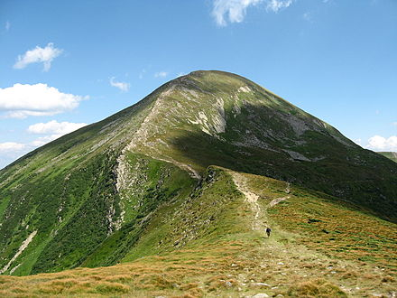
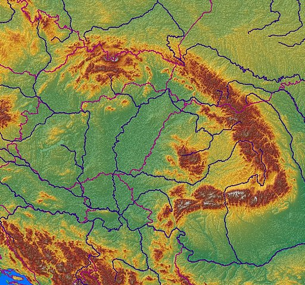
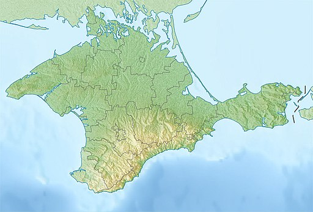

Говерла - найвища точка України, Українські Карпати
Нижче наведено список деяких найвищих гірських вершин України.
Двотисячники
- Говерла (2061м)
- Бребенескул (2032 м)
- Піп Іван Чорногорський (2028 м)
- Петрос (2020 м)
- Гутин Томнатик (2017 м)
- Ребра (2001м)
Тисячники
Карпати
- Менчул (1998 м)
- Туркул (1933 м)
- Пікуй (1405 м)
- Парашка (1271 м)
- Лопата(1210 м)
Крим
- Роман-Кош (1545 м)
- Демір-Капу (1540 м)
- Зейтін-Кош (1534 м)
- Кемаль-Егерек (1529 м)
- Еклізі-Бурун (1527 м)
- Ангара-Бурун (1453 м)